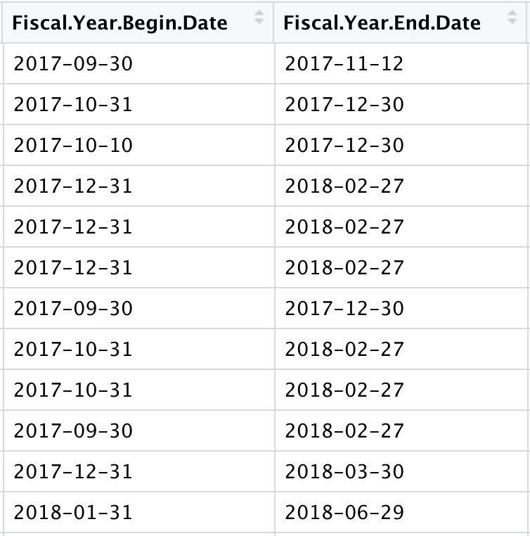
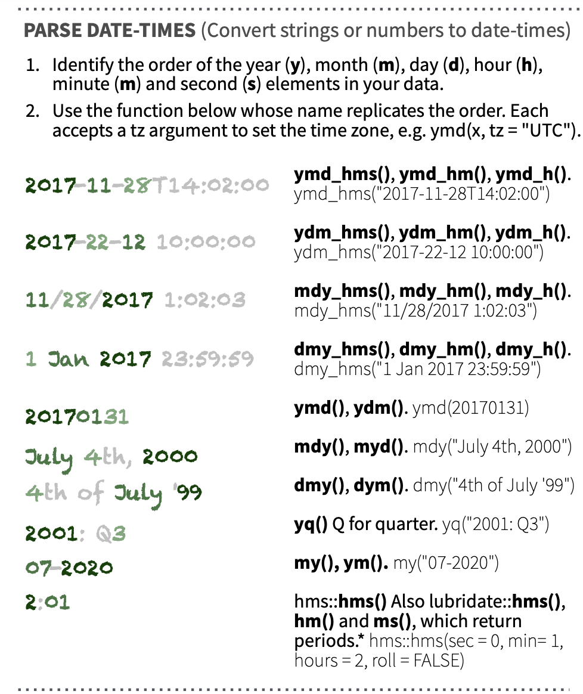

── Attaching core tidyverse packages ──────────────────────── tidyverse 2.0.0 ──
✔ dplyr 1.1.4 ✔ readr 2.1.5
✔ forcats 1.0.0 ✔ stringr 1.6.0
✔ ggplot2 4.0.0 ✔ tibble 3.3.0
✔ lubridate 1.9.3 ✔ tidyr 1.3.1
✔ purrr 1.1.0
── Conflicts ────────────────────────────────────────── tidyverse_conflicts() ──
✖ dplyr::filter() masks stats::filter()
✖ dplyr::lag() masks stats::lag()
ℹ Use the conflicted package (<http://conflicted.r-lib.org/>) to force all conflicts to become errorsCleaning Data
SDS 192: Introduction to Data Science
For Today
- Mutating to reformat vectors
- Working with NA columns
- Practice cleaning a dataset
Whenever formatting columns, we will use mutate to overwrite a variable with a new cleaned up variable.
library(tidyverse)
prisons <- read_csv("../data/Prison_Boundaries.csv")Rows: 6468 Columns: 26
── Column specification ────────────────────────────────────────────────────────
Delimiter: ","
chr (19): NAME, ADDRESS, CITY, STATE, ZIP, ZIP4, TELEPHONE, TYPE, STATUS, CO...
dbl (7): OBJECTID, FACILITYID, POPULATION, NAICS_CODE, CAPACITY, Shape__Are...
ℹ Use `spec()` to retrieve the full column specification for this data.
ℹ Specify the column types or set `show_col_types = FALSE` to quiet this message.Converting Types
as.character(),as.numeric(),as.logical()all convert a variable from an original type to a new type
typeof(prisons$COUNTYFIPS)[1] "character"prisons <-
prisons |>
mutate(COUNTYFIPS = as.numeric(COUNTYFIPS))typeof(prisons$COUNTYFIPS)[1] "double"Parsing Dates
- Dates can be converted to a date format using the
lubridatepackage- Step 1: Check how dates are formatted
- Step 2: Find corresponding conversion code on
lubridatecheatsheet


Setting Dates
ymd_hms()will take a date formatted as year, month, day, hour, minute, second and convert it to a date time format
prisons |>
select(NAME, SOURCEDATE) |>
head(3)# A tibble: 3 × 2
NAME SOURCEDATE
<chr> <chr>
1 RAPIDES PARISH DETENTION CENTER II 2017/09/29 00:00:00+00
2 RAPIDES PARISH DETENTION CENTER III 2017/09/29 00:00:00+00
3 LT. SHERMAN WALKER CORRECTIONAL FACILITY 2017/09/29 00:00:00+00library(lubridate)
prisons <-
prisons |>
mutate(SOURCEDATE = ymd_hms(SOURCEDATE))# A tibble: 3 × 2
NAME SOURCEDATE
<chr> <dttm>
1 RAPIDES PARISH DETENTION CENTER II 2017-09-29 00:00:00
2 RAPIDES PARISH DETENTION CENTER III 2017-09-29 00:00:00
3 LT. SHERMAN WALKER CORRECTIONAL FACILITY 2017-09-29 00:00:00Setting NA values
na_if()will take a variable and set specified values toNA
prisons |>
select(NAME, POPULATION) |>
head(3)# A tibble: 3 × 2
NAME POPULATION
<chr> <dbl>
1 RAPIDES PARISH DETENTION CENTER II -999
2 RAPIDES PARISH DETENTION CENTER III -999
3 LT. SHERMAN WALKER CORRECTIONAL FACILITY -999sum(is.na(prisons$POPULATION))[1] 0prisons <-
prisons |>
mutate(POPULATION = na_if(POPULATION, -999))prisons |>
select(NAME, POPULATION) |>
head(3)# A tibble: 3 × 2
NAME POPULATION
<chr> <dbl>
1 RAPIDES PARISH DETENTION CENTER II NA
2 RAPIDES PARISH DETENTION CENTER III NA
3 LT. SHERMAN WALKER CORRECTIONAL FACILITY NAsum(is.na(prisons$POPULATION))[1] 4047Replacing Strings
str_replace()will take a variable and replace an existing string with a new string
prisons |>
select(NAME, ADDRESS) |>
head(3)# A tibble: 3 × 2
NAME ADDRESS
<chr> <chr>
1 RAPIDES PARISH DETENTION CENTER II 400 B JOHN ALLISON DR
2 RAPIDES PARISH DETENTION CENTER III 7400 ACADEMY DR
3 LT. SHERMAN WALKER CORRECTIONAL FACILITY 100 DEPUTY BARTON GRANIER DRprisons <-
prisons |>
mutate(ADDRESS = str_replace(ADDRESS,
"DR",
"DRIVE"))# A tibble: 3 × 2
NAME ADDRESS
<chr> <chr>
1 RAPIDES PARISH DETENTION CENTER II 400 B JOHN ALLISON DRIVE
2 RAPIDES PARISH DETENTION CENTER III 7400 ACADEMY DRIVE
3 LT. SHERMAN WALKER CORRECTIONAL FACILITY 100 DEPUTY BARTON GRANIER DRIVERemoving Strings
str_replace()will take a variable and replace an existing string with a new string
prisons |> select(NAME, WEBSITE) |> head(3)# A tibble: 3 × 2
NAME WEBSITE
<chr> <chr>
1 RAPIDES PARISH DETENTION CENTER II http://www.rpso.org/corrections-divi…
2 RAPIDES PARISH DETENTION CENTER III http://www.rpso.org/corrections-divi…
3 LT. SHERMAN WALKER CORRECTIONAL FACILITY https://stjohnsheriff.org/crime-arre…prisons <-
prisons |>
mutate(WEBSITE = str_replace(WEBSITE,
"http://",
""))# A tibble: 3 × 2
NAME WEBSITE
<chr> <chr>
1 RAPIDES PARISH DETENTION CENTER II www.rpso.org/corrections-division
2 RAPIDES PARISH DETENTION CENTER III www.rpso.org/corrections-division
3 LT. SHERMAN WALKER CORRECTIONAL FACILITY https://stjohnsheriff.org/crime-arre…Conditionals
case_when()allows us to set values when conditions are met
prisons |>
select(SECURELVL) |>
distinct()# A tibble: 6 × 1
SECURELVL
<chr>
1 NOT AVAILABLE
2 MINIMUM
3 MAXIMUM
4 JUVENILE
5 MEDIUM
6 CLOSE prisons <-
prisons |>
mutate(JUVENILE =
case_when(
SECURELVL == "JUVENILE" ~ "Juvenile",
TRUE ~ "Not Juvenile")) # A tibble: 10 × 3
NAME SECURELVL JUVENILE
<chr> <chr> <chr>
1 RAPIDES PARISH DETENTION CENTER II NOT AVAILABLE Not Juvenile
2 RAPIDES PARISH DETENTION CENTER III NOT AVAILABLE Not Juvenile
3 LT. SHERMAN WALKER CORRECTIONAL FACILITY NOT AVAILABLE Not Juvenile
4 EAST FELICIANA PARISH JAIL / WORK RELEASE Not Juvenile Not Juvenile
5 WRIGHT COUNTY JAIL NOT AVAILABLE Not Juvenile
6 TURNING POINT WORK RELEASE Not Juvenile Not Juvenile
7 ANDREW COUNTY JAIL Not Juvenile Not Juvenile
8 AUDRAIN COUNTY JAIL NOT AVAILABLE Not Juvenile
9 ATTALA COUNTY JAIL (OLD) NOT AVAILABLE Not Juvenile
10 FRANKLIN PARISH DETENTION CENTER NOT AVAILABLE Not Juvenile